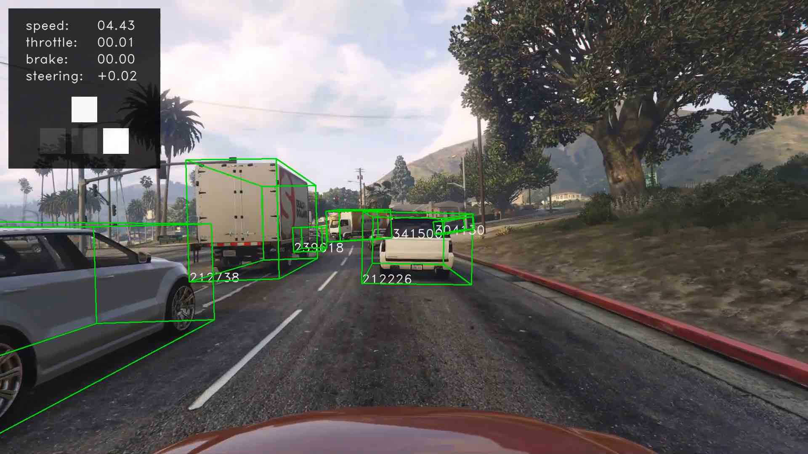
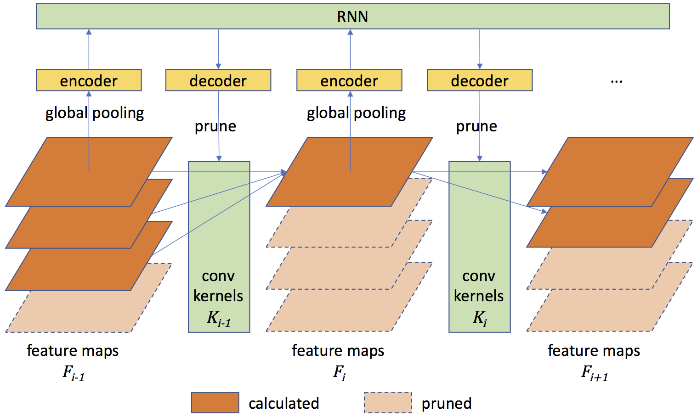
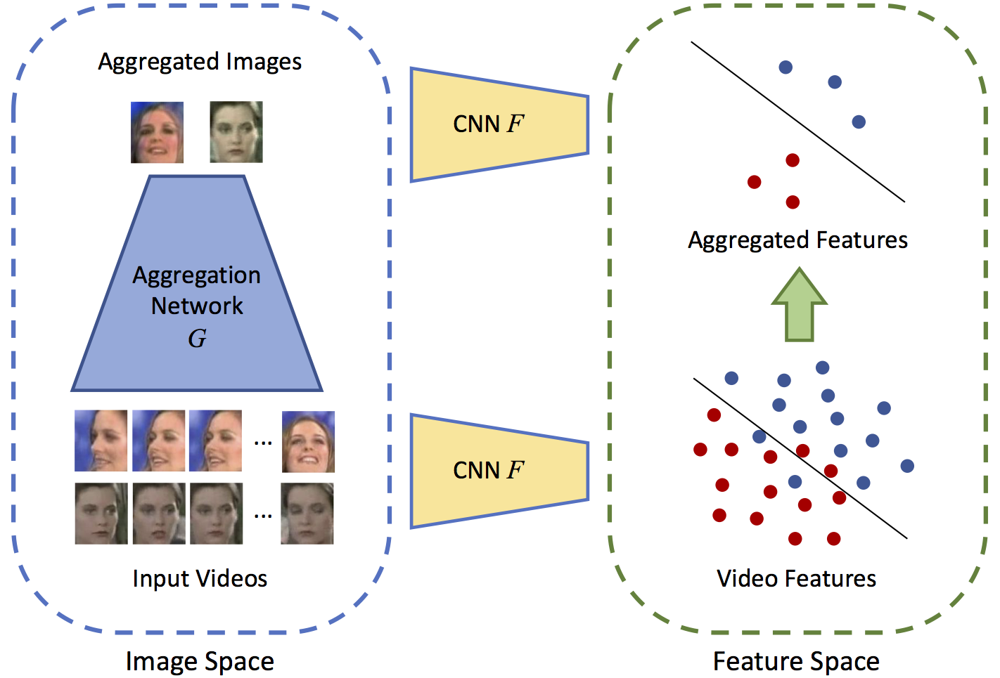
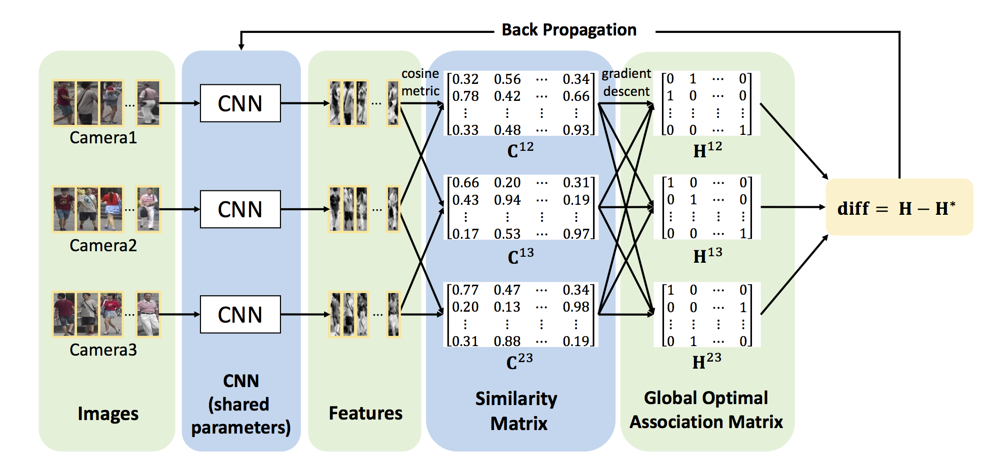

Ji (Tony) Lin
Contact:
to.tonylin AT gmail.com
About Me
I am currently a senior undergraduate student in Department of Electronic Engineering, School of Information Science and Technology, Tsinghua University. My Chinese name is 林己 [pronounce].
I worked in Intelligent Vision Group (IVG), advised by Prof. Jiwen Lu since Fall 2016. In Spring 2015, I worked in Energy Efficient Computing Group, advised by Prof. Yu Wang. In Summer 2017, I worked at Berkeley Artificial Intelligence Research (BAIR) as a research assistant, advised by Prof. Trevor Darrell, Prof. Sergey Levine and Dr. Fisher Yu.
My research interests lie in computer vision, deep learning, reinforcement learning and their applications.
Education

Aug. 2014 - Jul. 2018 (Expected), Department of Electronic Engineering, Tsinghua University,
Balchlor of Engineering, GPA: 91/100.
Jun. 2017 - Sept. 2017, Department of Electrical Engineering and Computer Sciences, University of California, Berkeley,
Visiting Researcher.
Publications
- J. Lin, Y. Rao, J. Lu, Runtime Neural Pruning, to appear in NIPS 2017.
- Y. Rao, J. Lin, J. Lu, Learning Discriminative Aggregation Network for Video Face Recognition, in ICCV 2017 (spotlight). [pdf]
- J. Lin, L. Ren, J. Lu, J. Feng, J. Zhou. Consistent-aware Deep Learning for Person Re-identification in a Camera Network, in CVPR 2017 (spotlight). [pdf]
Selected Research Projects

{kind=link}
3D Vehicle Extent and Future Trajectory Prediction,
Ji Lin, Dequan Wang, Fisher Yu, Trevor Darrell,
Jul 2017 - Nov 2017, UC Berkeley,
To properly control and plan for a self-driving vehicle, we need to expect how the other vehicles will drive in the future. While real-world data are expensive to annotate, we hack GTA V as a simulator to collect a large-scale dataset of visual observation and annotation. Given sequence of images we perform 3D vehicle bounding box detection, tracking, and future trajectory prediction. Further we show that model trained on synthetic data is applicable to real-world data like KITTI.

Learning from Human Demonstration and Self-exploration for Faster Reinforcement Learning,
Yang Gao, Huazhe Xu, Ji Lin, Fisher Yu, Sergey Levine, Trevor Darrell,
Jul 2017 - Oct 2017, UC Berkeley,
We design a unified framework based on Soft Q-Learning and Policy Gradient that jointly learns from human demonstration and in environment exploration. Our algorithm can switch smoothly from demonstration to environment exploration with no performance loss. Further, our method is able to handle noisy demonstration and multi-modality data, which is not feasible with supervised methods. We test our method on Enduro, TORCS and GTA V to show its effectiveness in driving tasks.

{kind=link}
Dynamical Network Pruning with Reinforcement Learning,
Ji Lin, Yongming Rao, Jiwen Lu,
Mar 2017 - May 2017, Tsinghua University,
We develop an algorithm to dynamically prune the neural network according to the difficulty of input image at runtime, which is scalable to existing neural network structures. We model the pruning as a bottom-up, layer-by-layer MDP, solved by reinforcement learning, and address the problem of large action space and long trajectory. Our method achieves much better spped-accuracy tradeoff on CIFAR and ImageNet, proving the effectiveness of sample specific inference.

{kind=link}
Combine Adversarial Learning and Metric Learning for Efficient Aggregation Network,
Yongming Rao, Ji Lin, Jiwen Lu,
Jan 2017 - Apr 2017, Tsinghua University,
We develop an aggregation method that produces single high-quality image from redundant and noisy face videos. By combining adversarial learning and metric learning we make the generated image realistic and discriminative in the feature space, which speeds up the recognition greatly and improves accuracy.

{kind=link}
Consistent-aware Deep Person Re-identification in a Camera Network,
Ji Lin, Liangliang Ren, Jiwen Lu, Jianjiang Feng, Jie Zhou,
June 2016 - Nov 2016, Tsinghua University,
We develop one of the first frameworks to address the inconsistency problem in multi-camera person re-identification. We model multi-camera re-identification as an optimization problem and solved with gradient descent to eliminate inconsistency, which also guides the back-propagation in the training phase. Our methods outperforms state-of-the-arts by large margins on multiple datasets.
Work Experience
- SenseTime Group Limited
Vision Researcher, Detection Team
Jan 2017 - Mar 2017, Beijing, China
Developed algorithm on semi-supervised face detection, and more efficient training with large scale dataset. Explored efficient models for object detection. Part of the results were deployed in real products.
Honors and Awards
Academic
- Invited presentation at IEEE SIDAS 2017 2017
Fellowships
- Fellowship of Spark Talents Program 2016
Awarded to the top 50 Tsinghua students, dedicated to scientific and technological innovations
Scholarships
- Annual Academic Excellent Award 2015-2017
Awarded to students with excellent academic achievements, top ~5% out of 262 students. - Annual Comprehensive Excellent Award 2015-2017
Awarded to students with excellent comprehensive performance, top ~5% out of 262 students. - Scholarship of Freshmen, Tsinghua University 2014
Awarded to top 10 students in College Entrance Exam.
Awards
- 3nd Prize of IEEE 2016 Low Power Image Recognition Challenge (LPIRC’16) 2016
Aim to discover the best technology in both image recognition and energy conservation - 1st Prize of 17th Electronic Design Contest, Tsinghua University 2016
Top robotics competition in Tsinghua University. Rank No.1 in 400 entrants.
Skills
Python C/C++ MATLAB Java Android
LaTeX Caffe TensorFlow PyTorch
Mandarin Chinese (native) English (proficiet)
Life :)
Here is a partial catalog of my attempts at becoming more than what I am today. I doubt I will ever succeed totally but I hope I will never stop trying.Photography
I've been long interested in photography for more than two years. Since I bought my first camera in Spring 2015, I've learnt so much in Photography Team of Tsinghua Student Art Troupe. I catch the sparkling moments and beauties in my life with my camera as very precious memories. I do not post too much of my work on the Internet, but you can still find some in the following sites:
[Instagram]
[500PX]
[TuChong]
Piano
I've always wanted to pick up some kind of musical instruments. It may not be the proper age to be proficient in piano, but I'll keep trying.
Tennis
Tennis is my recent favorite sport (still not proficient though). Reach me if you are interested too!